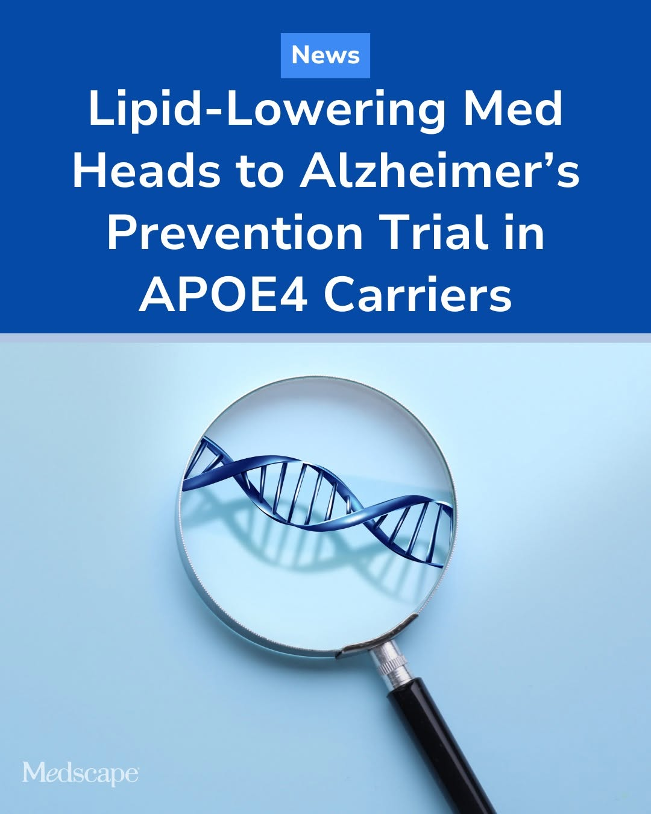

Obicetrapib lowered Alzheimer's marker p-tau217, most in APOE4 carriers (BROADWAY)
In the phase 3 BROADWAY trial, obicetrapib 10 mg cut LDL-C by 29.9%. A biomarker substudy of 1,535 participants (367 APOE4 carriers) found reduced p-tau217, greatest in APOE4 carriers, shaping a planned Alzheimer's prevention trial.